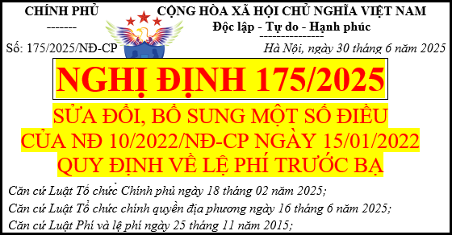

Nghị định số 175/2025/NĐ-CP ban hành ngày 30/6/2025 của Chính Phủ có hiệu lực từ 1/7/2025
Sửa đổi, bổ sung một số điều của Nghị định 10/2022/NĐ-CP quy định về lệ phí trước bạ mới nhất năm 2025
NGHỊ ĐỊNH
SỬA ĐỔI, BỔ SUNG MỘT SỐ ĐIỀU CỦA
NGHỊ ĐỊNH SỐ 10/2022/NĐ-CP NGÀY 15 THÁNG 01 NĂM 2022 CỦA CHÍNH PHỦ QUY ĐỊNH VỀ LỆ PHÍ TRƯỚC BẠ Căn cứ Luật Tổ chức Chính phủ ngày 18 tháng 02 năm 2025; Căn cứ Luật Tổ chức chính quyền địa phương ngày 16 tháng 6 năm 2025; Căn cứ Luật Phí và lệ phí ngày 25 tháng 11 năm 2015; Căn cứ Luật Trật tự, an toàn giao thông đường bộ ngày 27 tháng 6 năm 2024; Căn cứ Luật Đất đai ngày 18 tháng 01 năm 2024; Luật sửa đổi, bổ sung một số điều của Luật Đất đai số 31/2024/QH15, Luật Nhà ở số 27/2023/QH15, Luật Kinh doanh bất động sản số 29/2023/QH15, Luật Các tổ chức tín dụng số 32/2024/QH15 ngày 29 tháng 6 năm 2024; Theo đề nghị của Bộ trưởng Bộ Tài chính; Chính phủ ban hành Nghị định sửa đổi, bổ sung một số điều của Nghị định số 10/2022/NĐ-CP ngày 15 tháng 01 năm 2022 của Chính phủ quy định về lệ phí trước bạ. Điều 1. Sửa đổi, bổ sung một số điều của Nghị định số 10/2022/NĐ-CP ngày 15 tháng 01 năm 2022 của Chính phủ quy định về lệ phí trước bạ1. Sửa đổi, bổ sung khoản 6 và khoản 7 Điều 3 như sau:“6. Xe mô tô, xe gắn máy, xe tương tự xe mô tô, xe gắn máy (sau đây gọi chung là xe máy) theo quy định pháp luật về trật tự, an toàn giao thông đường bộ phải đăng ký và gắn biển số do cơ quan nhà nước có thẩm quyền cấp. 7. Xe ô tô, rơ moóc, sơ mi rơ moóc, xe chở người bốn bánh có gắn động cơ, xe chở hàng bốn bánh có gắn động cơ, xe máy chuyên dùng, xe tương tự các loại xe này theo quy định pháp luật về trật tự, an toàn giao thông đường bộ phải đăng ký và gắn biển số do cơ quan nhà nước có thẩm quyền cấp.”. 2. Sửa đổi, bổ sung một số điểm, khoản tại Điều 7a) Sửa đổi, bổ sung điểm d khoản 1 Điều 7 như sau: “d) Trường hợp giá nhà, đất tại hợp đồng mua bán nhà, đất (đất gắn liền với nhà, tài sản trên đất không tách riêng giá trị đất) cao hơn giá do Ủy ban nhân dân tỉnh, thành phố trực thuộc trung ương ban hành thì giá tính lệ phí trước bạ đối với nhà, đất là giá tại hợp đồng mua bán nhà, đất.”. b) Sửa đổi, bổ sung tiêu đề khoản 2 Điều 7 như sau: “2. Giá tính lệ phí trước bạ đối với tài sản quy định tại Điều 3 Nghị định này (trừ nhà, đất và phương tiện quy định tại khoản 3 Điều này) là giá chuyển nhượng tài sản trên thị trường của từng loại tài sản.”. c) Sửa đổi, bổ sung khoản 3 Điều 7 như sau: “3. Giá tính lệ phí trước bạ đối với tài sản là xe ô tô, các loại xe tương tự xe ô tô (sau đây gọi chung là ô tô) và xe máy quy định tại khoản 6, khoản 7 Điều 3 Nghị định này (trừ xe ô tô chuyên dùng, xe máy chuyên dùng) là giá tại Bảng giá tính lệ phí trước bạ do Ủy ban nhân dân tỉnh, thành phố trực thuộc trung ương ban hành. a) Giá tính lệ phí trước bạ tại Bảng giá tính lệ phí trước bạ của từng tỉnh, thành phố trực thuộc trung ương được xác định theo nguyên tắc đảm bảo phù hợp với giá chuyển nhượng tài sản trên thị trường tại thời điểm xây dựng Bảng giá tính lệ phí trước bạ. Giá chuyển nhượng tài sản trên thị trường của từng loại ô tô, xe máy (đối với xe ô tô, xe máy là theo kiểu loại xe; đối với xe tải là theo nước sản xuất, nhãn hiệu, khối lượng hàng chuyên chở cho phép tham gia giao thông; đối với xe khách là theo nước sản xuất, nhãn hiệu, số người cho phép chở kể cả lái xe) được căn cứ vào các cơ sở dữ liệu theo quy định tại khoản 2 Điều này. b) Trường hợp phát sinh loại ô tô, xe máy mới mà tại thời điểm nộp tờ khai lệ phí trước bạ chưa có trong Bảng giá tính lệ phí trước bạ thì cơ quan thuế cấp tỉnh căn cứ vào cơ sở dữ liệu theo quy định tại khoản 2 Điều này để quyết định giá tính lệ phí trước bạ của từng loại ô tô, xe máy mới phát sinh trên địa bàn tỉnh (đối với xe ô tô, xe máy là theo kiểu loại xe; đối với xe tải là theo nước sản xuất, nhãn hiệu, khối lượng hàng chuyên chở cho phép tham gia giao thông; đối với xe khách là theo nước sản xuất, nhãn hiệu, số người cho phép chở kể cả lái xe). c) Trường hợp phát sinh ô tô, xe máy có trong Bảng giá tính lệ phí trước bạ mà giá chuyển nhượng ô tô, xe máy trên thị trường tăng hoặc giảm từ 5% trở lên so với giá tại Bảng giá tính lệ phí trước bạ thì cơ quan thuế cấp tỉnh chủ trì, phối hợp với Sở Tài chính tổng hợp, báo cáo Ủy ban nhân dân tỉnh, thành phố trực thuộc trung ương trước ngày mùng 5 tháng cuối quý. Ủy ban nhân dân tỉnh, thành phố trực thuộc trung ương xem xét, ban hành Quyết định về Bảng giá tính lệ phí trước bạ điều chỉnh, bổ sung trước ngày 25 của tháng cuối quý để áp dụng kể từ ngày đầu của quý tiếp theo. Bảng giá tính lệ phí trước bạ điều chỉnh, bổ sung được ban hành theo quy định về ban hành Bảng giá tính lệ phí trước bạ quy định tại điểm a khoản này.”. 3. Sửa đổi, bổ sung khoản 4 Điều 8 như sau:“4. Xe máy: Mức thu là 2%. Đối với xe máy nộp lệ phí trước bạ lần thứ 2 trở đi được áp dụng mức thu là 1%.”. 4. Sửa đổi, bổ sung một số điểm và tiêu đề của khoản 5 Điều 8a) Sửa đổi, bổ sung điểm a, điểm b và tiêu đề khoản 5 như sau: “5. Ô tô, rơ moóc, sơ mi rơ moóc, xe chở người bốn bánh có gắn động cơ, xe chở hàng bốn bánh có gắn động cơ, xe máy chuyên dùng, xe tương tự các loại xe này: Mức thu là 2%. Riêng: a) Ô tô chở người từ 09 chỗ ngồi trở xuống (bao gồm cả xe pick-up chở người): nộp lệ phí trước bạ lần đầu với mức thu là 10%. Trường hợp cần áp dụng mức thu cao hơn cho phù hợp với điều kiện thực tế tại từng địa phương, Hội đồng nhân dân tỉnh, thành phố trực thuộc trung ương quyết định điều chỉnh tăng nhưng tối đa không quá 50% mức thu quy định chung tại điểm này. b) Ô tô pick-up chở hàng cabin kép, Ô tô tải VAN có từ hai hàng ghế trở lên, có thiết kế vách ngăn cố định giữa khoang chở người và khoang chở hàng nộp lệ phí trước bạ lần đầu với mức thu bằng 60% mức thu lệ phí trước bạ lần đầu đối với ô tô chở người từ 09 chỗ ngồi trở xuống.”. b) Sửa đổi, bổ sung điểm d khoản 5 như sau: “d) Các loại ô tô quy định tại điểm a, điểm b, điểm c khoản này: nộp lệ phí trước bạ lần thứ 2 trở đi với mức thu là 2% và áp dụng thống nhất trên toàn quốc. Căn cứ vào loại phương tiện ghi tại Giấy chứng nhận chất lượng an toàn kỹ thuật và bảo vệ môi trường do cơ quan đăng kiểm Việt Nam cấp, cơ quan thuế xác định mức thu lệ phí trước bạ đối với phương tiện theo quy định tại khoản này.”. 5. Sửa đổi, bổ sung khoản 6 Điều 8 như sau:“6. Đối với vỏ, tổng thành khung, tổng thành máy, thân máy (block) quy định tại khoản 8 Điều 3 Nghị định này được thay thế và phải đăng ký với cơ quan nhà nước có thẩm quyền thì áp dụng mức thu lệ phí trước bạ tương ứng của từng loại tài sản. Riêng vỏ, tổng thành khung, tổng thành máy, thân máy (block) của ô tô được thay thế và phải đăng ký với cơ quan nhà nước có thẩm quyền áp dụng mức thu lệ phí trước bạ là 2%.”. 6. Sửa đổi, bổ sung một số khoản, điểm Điều 10a) Sửa đổi, bổ sung điểm c khoản 3 Điều 10 như sau: “c) Đầu tư xây dựng kết cấu hạ tầng (không phân biệt đất trong hay ngoài khu công nghiệp, khu chế xuất), đầu tư xây dựng nhà theo dự án đầu tư xây dựng nhà theo quy định của pháp luật, bao gồm cả trường hợp tổ chức, cá nhân nhận chuyển nhượng để tiếp tục đầu tư xây dựng kết cấu hạ tầng, đầu tư xây dựng nhà để chuyển nhượng. Các trường hợp này nếu đăng ký quyền sở hữu, quyền sử dụng để cho thuê hoặc tự sử dụng thì phải nộp lệ phí trước bạ”. b) Sửa đổi, bổ sung khoản 5 Điều 10 như sau: “5. Cá nhân sử dụng đất nông nghiệp theo quy định tại Điều 47 Luật Đất đai.”. c) Sửa đổi, bổ sung khoản 9 Điều 10 như sau: “9. Đất làm nghĩa trang, nhà tang lễ, cơ sở hỏa táng; đất cơ sở lưu giữ tro cốt.”. d) Sửa đổi, bổ sung điểm a khoản 17 Điều 10 như sau: “a) Tổ chức, cá nhân đem tài sản của mình góp vốn vào doanh nghiệp, tổ chức tín dụng, hợp tác xã, liên hiệp hợp tác xã.”. đ) Sửa đổi, bổ sung khoản 26 Điều 10 như sau: “26. Nhà ở, đất ở của hộ nghèo; nhà ở, đất ở của hộ gia đình, cá nhân thuộc địa bàn có điều kiện kinh tế - xã hội khó khăn, đặc biệt khó khăn theo quy định của pháp luật về đầu tư.”. 7. Sửa đổi, bổ sung khoản 2 Điều 11 như sau:“2. Dữ liệu điện tử nộp lệ phí trước bạ qua Kho bạc Nhà nước, ngân hàng thương mại hoặc tổ chức cung ứng dịch vụ trung gian thanh toán được Cục Thuế ký số và cung cấp lên Cổng dịch vụ công Quốc gia, Cổng dịch vụ công cấp bộ (hoặc Hệ thống thông tin giải quyết thủ tục hành chính cấp bộ), Hệ thống thông tin giải quyết thủ tục hành chính cấp tỉnh có giá trị như chứng từ bản giấy để cơ quan cảnh sát giao thông, cơ quan nông nghiệp và môi trường và các cơ quan nhà nước khác có thẩm quyền đã kết nối với Cổng dịch vụ công Quốc gia truy cập, khai thác dữ liệu phục vụ công tác giải quyết thủ tục hành chính liên quan đến việc đăng ký quyền sở hữu, quyền sử dụng tài sản.”. 8. Sửa đổi, bổ sung Điều 13 như sau:“1. Bộ Tài chính có trách nhiệm: a) Hướng dẫn, quy định chi tiết các nội dung được giao theo quy định tại Nghị định này. b) Tổng kết, đánh giá kết quả thực hiện và đề xuất sửa đổi mức thu lệ phí trước bạ đối với ô tô điện chạy pin trước 6 tháng khi kết thúc giai đoạn áp dụng mức thu quy định tại điểm c khoản 5 Điều 8 Nghị định này (được sửa đổi, bổ sung tại Điều 1 Nghị định số 51/2025/NĐ-CP ngày 01 tháng 3 năm 2025 của Chính phủ). 2. Bộ Nông nghiệp và Môi trường, Bộ Xây dựng, Bộ Công an và các cơ quan nhà nước khác có thẩm quyền có trách nhiệm: a) Xây dựng hệ thống kết nối, chia sẻ dữ liệu, chỉ đạo tổ chức có liên quan truy cập, khai thác dữ liệu điện tử nộp lệ phí trước bạ trên Cổng dịch vụ công Quốc gia, Cổng dịch vụ công cấp bộ (hoặc Hệ thống thông tin giải quyết thủ tục hành chính cấp bộ), Hệ thống thông tin giải quyết thủ tục hành chính cấp tỉnh để giải quyết các thủ tục hành chính liên quan đến việc đăng ký tài sản. b) Kết nối, chia sẻ dữ liệu về thông tin tài sản thuộc đối tượng chịu lệ phí trước bạ theo các tiêu chí tại mẫu Tờ khai lệ phí trước bạ do Bộ Tài chính ban hành và theo quy định về việc liên thông điện tử. 3. Bộ Xây dựng (Cục Đăng kiểm Việt Nam) có trách nhiệm phân loại phương tiện giao thông làm cơ sở cho việc thu lệ phí trước bạ theo quy định. 4. Ủy ban nhân dân tỉnh, thành phố trực thuộc trung ương có trách nhiệm: a) Ban hành Bảng giá tính lệ phí trước bạ đối với nhà, ô tô và xe máy để làm căn cứ tính lệ phí trước bạ theo quy định tại Nghị định này. b) Trình Hội đồng nhân dân tỉnh, thành phố trực thuộc trung ương quyết định mức thu tính lệ phí trước bạ đối với xe ô tô từ 9 chỗ ngồi trở xuống tại địa phương theo điểm a khoản 5 Điều 8 Nghị định này. c) Kết nối, chia sẻ dữ liệu thông tin Bảng giá tính lệ phí trước bạ, Bảng giá tính lệ phí trước bạ điều chỉnh, bổ sung đối với ô tô, xe máy tới cơ quan thuế cấp tỉnh để thực hiện cập nhật vào ứng dụng quản lý trước bạ của cơ quan thuế, phục vụ theo dõi tập trung và thực hiện thủ tục khai, nộp lệ phí trước bạ theo quy định.”. Điều 2. Điều khoản thi hành1. Nghị định này có hiệu lực thi hành từ ngày 01 tháng 7 năm 2025. 2. Từ ngày Nghị định này có hiệu lực thi hành đến hết ngày 31 tháng 12 năm 2025, trường hợp Ủy ban nhân dân tỉnh, thành phố trực thuộc trung ương chưa ban hành Bảng giá tính lệ phí trước bạ đối với ô tô, xe máy thì tiếp tục được áp dụng Bảng giá tính lệ phí trước bạ, Bảng giá tính lệ phí trước bạ điều chỉnh, bổ sung đối với ô tô, xe máy do Bộ Tài chính ban hành. 3. Các Bộ trưởng, Thủ trưởng cơ quan ngang bộ, Thủ trưởng cơ quan thuộc Chính phủ, Chủ tịch Ủy ban nhân dân tỉnh, thành phố trực thuộc trung ương và các tổ chức, cá nhân có liên quan chịu trách nhiệm thi hành Nghị định này.
|
Gửi yêu cầu vào mail: ketoandieutam@gmail.com (Tiêu đề ghi rõ Tài liệu muốn tải)
